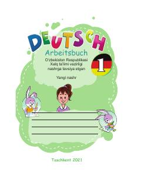

NTNemis tilini o'rganuvchi o'quvchilar uchun mo'ljallangan amaliy mashqlar to'plami.
Ushbu mashq daftari O'zbekiston Respublikasi Xalq ta'limi vazirligi tomonidan tavsiya etilgan bo'lib, nemis tilini o'rganayotgan o'quvchilar uchun mo'ljallangan. Kitobda tilni o'zlashtirishga yordam beruvchi turli xil amaliy mashqlar va topshiriqlar jamlangan.